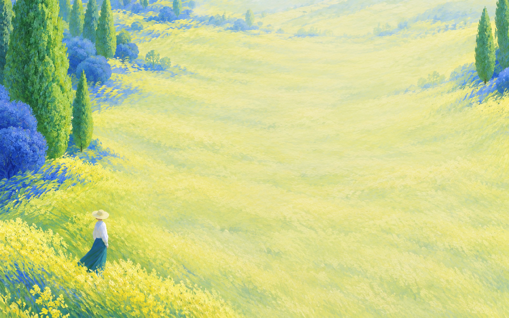

壁纸从正文区透出，左右侧栏半透明悬浮，顶栏与工具栏保持实色。
慢档 0.45× · 中档 1.0× · 快档 1.5×按最近输入间隔与字数估计节奏；逐字输入保持连贯，停笔约 7.2 秒后渐慢，8.2–10 秒内暂停；风声与阳光仍按原节奏淡出。
可调 1.0×–2.0×，默认 1.5×；只影响视频快档，调节时平滑过渡。
从最后一次真实落字开始计时，先渐慢再暂停。仅影响视频；选择较短时间可能重新出现字间启停。
空闲 · 已暂停
 诡秘之主
诡秘之主小说
诡秘之主
诡秘之主小说